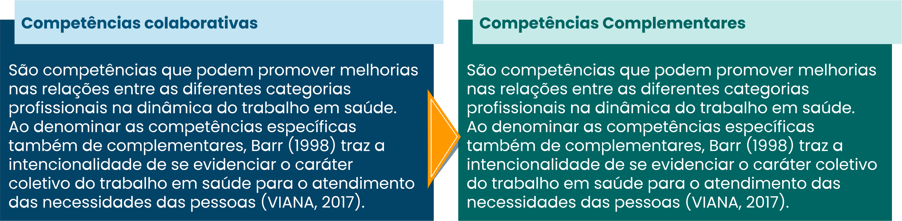

TÓPICO 01
ATUAÇÃO PROFISSIONAL NA ATENÇÃO PRIMÁRIA À SAÚDE
TÓPICO 01
ATUAÇÃO PROFISSIONAL NA ATENÇÃO PRIMÁRIA À SAÚDE
3.2 O que são competências colaborativas?
Em atendimento à complexidade e à integralidade envolvidas na compreensão e no cuidado em saúde, há o domínio de competências comuns a todas ou a algumas profissões, que ampliam o horizonte de atuação e podem configurar sobreposições entre as diferentes áreas. Assim, à medida que se reconhecem competências comuns entre as diversas profissões, podem ocorrer conflitos, ainda que também oportunizem aprendizados e mudanças. Daí a necessidade das competências colaborativas, que consistem no aprendizado de saberes, habilidades e atitudes que permitem trabalhar em uma perspectiva colaborativa interprofissional (PEDUZZI, 2017).